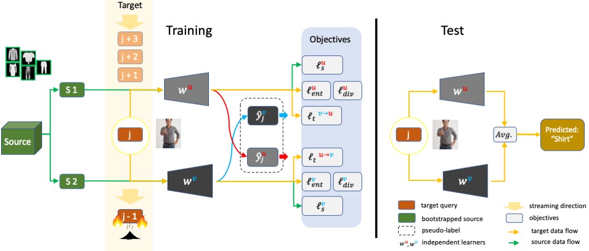
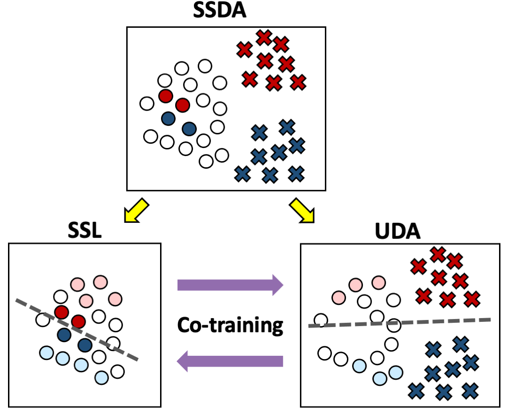
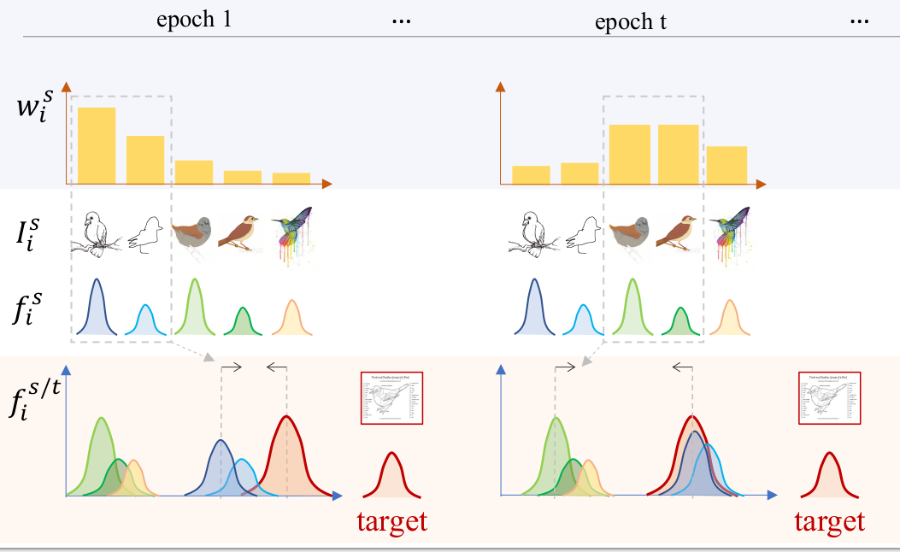
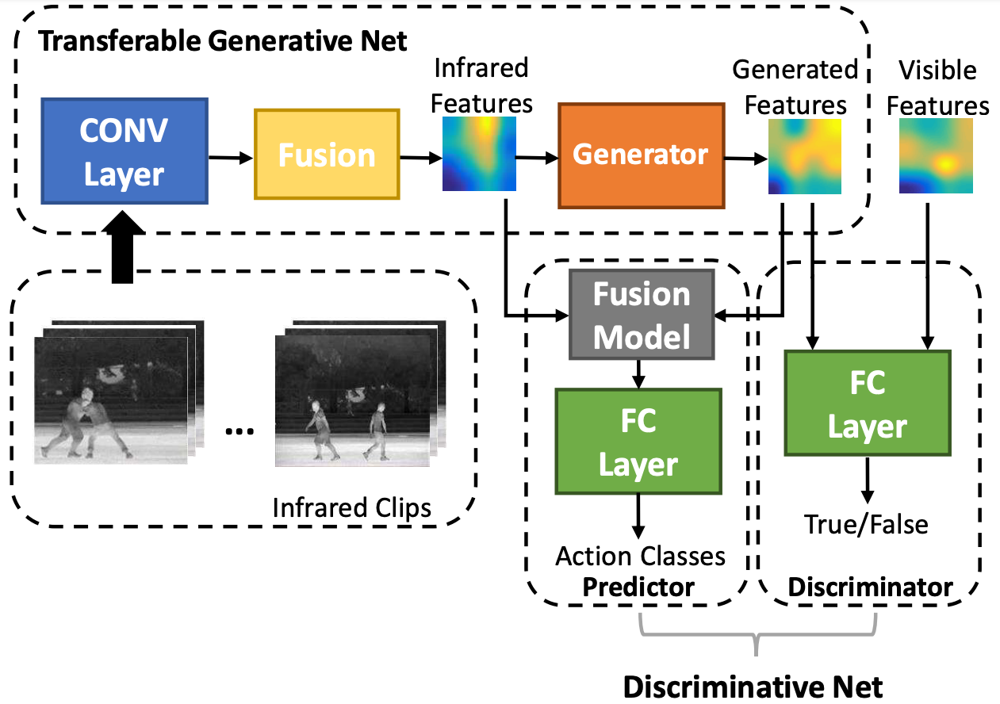

Luyu Yang
Email
loyo (at) umd (dot) edu
I am a fourth-year PhD student at the
University of Maryland, College Park. I am advised by
Prof. Abhinav Shrivastava and
Prof. Larry Davis .
My research currently is in machine learning and computer vision. I work on problems in domain adaptation and model robustness during my PhD. Before that, I have worked as an R&D for 3D reconstruction at KanDao Technology, a start-up company on VR cameras. During my masters, I have worked on action recognition in videos.
Currently, I am seeking a full-time job. Please reach out to me if you are interested.
Google Scholar | LinkedIn | CV
|
|
News
- Two papers accepted by ECCV 2022.
- Nominated for Google PhD Fellowship 2022 by University of Maryland.
|
2022
|
|

|
Burn After Reading: Online Adaptation for Cross-domain Streaming Data
Luyu Yang, Mingfei Gao, Zeyuan Chen, Ran Xu, Abhinav Shrivastava, Chetan Ramaiah.
ECCV, 2022
pdf
| abstract
| bibtex
| code
| Project page
In the context of online privacy, many methods propose complex security preserving measures to protect sensitive data. In this paper, we note that: not storing any sensitive data is the best form of security. We propose an online framework called "Burn After Reading", i.e. each online sample is permanently deleted after it is processed. Our framework utilizes the labels from the public data and predicts on the unlabeled sensitive private data. To tackle the inevitable distribution shift from the public data to the private data, we propose a novel domain adaptation algorithm that directly aims at the fundamental challenge of this online setting--the lack of diverse source-target data pairs. We design a Cross-Domain Bootstrapping approach, named CroDoBo, to increase the combined data diversity across domains. To fully exploit the valuable discrepancies among the diverse combinations, we employ the training strategy of multiple learners with co-supervision. CroDoBo achieves state-of-the-art online performance on four domain adaptation benchmarks.
@article{yang2021burn,
title={Burn After Reading: Online Adaptation for Cross-domain Streaming Data},
author={Yang, Luyu and Gao, Mingfei and Chen, Zeyuan and Xu, Ran and Shrivastava, Abhinav and Ramaiah, Chetan},
journal={arXiv preprint arXiv:2112.04345},
year={2021}}
|
2021
|
|

|
Deep Co-Training with Task Decomposition for Semi-Supervised Domain Adaptation
Luyu Yang, Yan Wang, Mingfei Gao, Abhinav Shrivastava, Kilian Q. Weinberger, Wei-Lun Chao, Ser-Nam Lim.
ICCV, 2021
pdf
| abstract
| bibtex
| code
Semi-supervised domain adaptation (SSDA) aims to adapt models trained from a labeled source domain to a different but related target domain, from which unlabeled data and a small set of labeled data are provided. Current methods that treat source and target supervision without distinction overlook their inherent discrepancy, resulting in a source-dominated model that has not effectively use the target supervision. In this paper, we argue that the labeled target data needs to be distinguished for effective SSDA, and propose to explicitly decompose the SSDA task into two sub-tasks: a semi-supervised learning (SSL) task in the target domain and an unsupervised domain adaptation (UDA) task across domains. By doing so, the two sub-tasks can better leverage the corresponding supervision and thus yield very different classifiers. To integrate the strengths of the two classifiers, we apply the well established co-training framework, in which the two classifiers exchange their high confident predictions to iteratively 'teach each other' so that both classifiers can excel in the target domain. We call our approach Deep Co-training with Task decomposition (DeCoTa). DeCoTa requires no adversarial training and is easy to implement. Moreover, DeCoTa is well founded on the theoretical condition of when co-training would succeed. As a result, DeCoTa achieves state-of-the-art results on several SSDA datasets, outperforming the prior art by a notable 4% margin on DomainNet.
@inproceedings{yang2021deep,
title={Deep co-training with task decomposition for semi-supervised domain adaptation},
author={Yang, Luyu and Wang, Yan and Gao, Mingfei and Shrivastava, Abhinav and Weinberger,
Kilian Q and Chao, Wei-Lun and Lim, Ser-Nam},
booktitle={Proceedings of the IEEE/CVF International Conference on Computer Vision},
pages={8906--8916},
year={2021}
}
|
2020
|
|

|
Curriculum Manager for Source Selection in Multi-Source Domain Adaptation
Luyu Yang, Yogesh Balaji, Ser-Nam Lim, Abhinav Shrivastava.
ECCV, 2020
pdf
| abstract
| bibtex
The performance of Multi-Source Unsupervised Domain Adaptation depends significantly on the effectiveness
of transfer from labeled source domain samples. In this paper, we proposed an adversarial agent that
learns a dynamic curriculum for source samples, called Curriculum Manager for Source Selection (CMSS).
The Curriculum Manager, an independent network module, constantly updates the curriculum during training,
and iteratively learns which domains or samples are best suited for aligning to the target. The intuition
behind this is to force the Curriculum Manager to constantly re-measure the transferability of latent domains
over time to adversarially raise the error rate of the domain discriminator. CMSS does not require any knowledge
of the domain labels, yet it outperforms other methods on four well-known benchmarks by significant margins.
We also provide interpretable results that shed light on the proposed method.
@article{2020EccvCMSS,
title={Curriculum Manager for Source Selection
in Multi-Source Domain Adaptation},
author={Yang, Luyu and Balaji, Yogesh and
Lim, Ser-Nam and Shrivastava, Abhinav},
journal={arXiv preprint arXiv:2007.01261},
year={2020}
}
|
2018
|
|

|
PM-GANs: Discriminative Representation Learning for Action Recognition Using Partial-modalities
Lan Wang, Chenqiang Gao, Luyu Yang, Yue Zhao, Wangmeng Zuo, Deyu Meng.
ECCV, 2018
pdf
| abstract
| bibtex
Data of different modalities generally convey complimentary but heterogeneous information, and a more discriminative representation is often preferred by combining multiple data modalities like the RGB and infrared features. However in reality, obtaining both data channels is challenging due to many limitations. For example, the RGB surveillance cameras are often restricted from private spaces, which is in conflict with the need of abnormal activity detection for personal security. As a result, using partial data channels to build a full representation of multi-modalities is clearly desired. In this paper, we propose a novel Partial-modal Generative Adversarial Networks (PM-GANs) that learns a full-modal representation using data from only partial modalities. The full representation is achieved by a generated representation in place of the missing data channel. Extensive experiments are conducted to verify the performance of our proposed method on action recognition, compared with four state-of-the-art methods. Meanwhile, a new InfraredVisible Dataset for action recognition is introduced, and will be the first publicly available action dataset that contains paired infrared and visible spectrum.
@inproceedings{wang2018pm,
title={Pm-gans: Discriminative representation learning for action recognition using partial-modalities},
author={Wang, Lan and Gao, Chenqiang and Yang, Luyu and Zhao, Yue and Zuo, Wangmeng and Meng, Deyu},
booktitle={Proceedings of the European Conference on Computer Vision (ECCV)},
pages={384--401},
year={2018}}
|
Selected Awards
- Dean's Fellowship (2018-2019)
|
|
{kind=link}